Esta revision mapea el estado del arte en teoria y modelado de materiales para fusion nuclear, con enfasis en tungsteno (W) y aceros ferriticos/martensiticos (FM) como materiales de primera pared y manta. El review cubre desde DFT y potenciales de aprendizaje automatico (MLPs) hasta dinamica molecular, simulaciones de cascadas de colision, modelos de transmutacion, difusion de hidrogeno/helio, y FEM a escala de componente. El mensaje central: el modelado ya no es solo investigacion fundamental; es parte necesaria del camino desde los reactores experimentales actuales hasta los prototipos como STEP o EU-DEMO.
Contexto: Por Que El Modelado Es Indispensable
Un reactor de fusion expone los materiales de primera pared a condiciones sin precedente en ningun reactor experimental actual: flujos de neutrones de 14 MeV, tasas de dano de varios dpa/ano, produccion de transmutantes como Re y Os en el W, e implantacion masiva de hidrogeno y helio desde el plasma. Ningun experimento actual puede reproducir simultaneamente todas estas condiciones durante 10 anos.
El modelado computacional cierra esa brecha: permite predecir la evolucion microestructural del material bajo condiciones de reactor real a largo plazo, guiar el diseno de aleaciones nuevas (HEA, W-Cr-Y-Zr SMART, etc.) y proveer parametros para modelos de ingenieria a gran escala.
DFT + potenciales empiricos
Escala atomica. Calcula energias de formacion y migracion de defectos, energias de enlace He/H, propiedades elasticas de aleaciones. Base de todo el modelado posterior.
Potenciales de ML (MLP)
Precision DFT a costo de potencial empirico. Permite MD en sistemas de millones de atomos y simulaciones de cascadas con quimica realista en HEA.
Dinamica Molecular (MD)
Simula cascadas de colision, difusion de defectos, nucleacion de burbujas de He, fluencia por irradiacion y evolucion microestructural durante recocido.
FEM a escala de componente
Usa parametros derivados de MD/DFT para simular esfuerzos termomechanicos en componentes reales del tokamak (MAST-U, KSTAR), con mallas de 127 millones de elementos.
Temas Principales Del Review
| Tema | Material / Sistema | Hallazgo / Avance clave |
|---|---|---|
| Transmutacion de W | W puro en EU-DEMO | Tras 10 anos de exposicion, el W acumula Re y Os por reacciones nucleares. Re y Os forman precipitados que cambian la constante de red y degradan la energias de defecto de apilamiento generalizado (GSFE), comprometiendo la ductilidad. |
| Segregacion en HEA de W | W-Ta-Cr-V, W-Cr-Y-Zr | Simulaciones MC predicen co-segregacion de Cr y V hacia precipitados ricos en esos elementos. La adicion de V en W-Ta reduce la densidad de huecos en cascadas solapadas. W-Cr-Y-Zr muestra descomposicion de fases entre W y Cr con orden de corto alcance W-Y/Zr. |
| Evolucion microestructural en Fe-Cr | Aceros FM (HT9, T91) | Clustering de Cr con impurezas C/N y vacantes. MLPs y expansion de cluster predicen comportamiento que concuerda con datos de endurecimiento en reactores de neutrones rapidos y doble irradiacion ionica. |
| Cascadas en REBCO | REBa2Cu3O7 superconductor | Simulacion de cascadas de 20 keV muestra creacion de vacantes, intersticiales y antisitios en la estructura compleja del REBCO. Relevante para imanes superconductores del tokamak. |
| Difusion de H en metales | W y otros metales | Los efectos cuanticos nucleares (NQE) via path-integral MD son cruciales a baja temperatura para reproducir la desviacion del comportamiento Arrhenius medida experimentalmente. Los MLPs hacen viable esta simulacion a escala real. |
| Retencion y TDS de D en W | W irradiado con D | Modelos cineticos de Monte Carlo reproducen los espectros TDS experimentales de W implantado con D y predicen la retencion en funcion de temperatura de recocido. |
| FEM a escala de tokamak | MAST-U, KSTAR | Modelos CAD listos para FEM del MAST-U con 127 millones de elementos. V-KSTAR calcula distribucion 3D de flujos de calor y trazado de ondas RF en el KSTAR. |
| Fluencia por irradiacion | W, Fe (DEMO) | MD a baja temperatura muestra que la fluencia es impulsada por SIAs que coalescen por interacciones elasticas, sin necesitar difusion termica de vacantes. Simulaciones de Fe en DEMO-HCPB predicen tasas de hinchamiento y fluencia como funcion de temperatura. |
Figuras Explicadas
Este review tiene 30 figuras numeradas mas 4 elementos de pagina sin caption. Se presentan en orden las figuras con caption extraido.

Theory and modelling of fusion materials will necessarily play a part in transitioning from present, experimental devices to future fusion reactors. In this review, we highlight examples from the state-of-the-art alongside the areas where we see gaps that should soon be addressed.
Esta figura abre el review y establece el argumento central: el modelado teorico no es un lujo academico sino una pieza necesaria del camino hacia reactores de fusion practicos. La imagen de fondo (cortesia de la UKAEA) muestra el concepto STEP del tokamak esfera, y los textos alrededor enumeran los temas que cubre la revision. La jerarquia implicita es: DFT y atomistica informan modelos de escala superior, que alimentan FEM de componente, que guian el diseno de reactores.

Variation in the predicted damage dose rate (dpa per unit time), helium and hydrogen production per year in pure Fe as a function of depth into the plasma-facing wall of a typical fusion tokamak design (early concept of STEP). Also shown is the total neutron flux variation over the same depth.
Una de las figuras clave para entender el desafio de irradiacion. La tasa de dano (dpa/ano), la produccion de He y H, y el flujo de neutrones varian radicalmente con la profundidad dentro de la pared del tokamak. La primera pared (frente al plasma) recibe el mayor dano y la mayor produccion de gases; la manta posterior tiene condiciones muy distintas. Esta heterogeneidad en profundidad hace que un solo material no sea optimo en toda la pared, y exige modelos que predigan la evolucion microestructural en cada zona por separado.

(a) Transmutation of W after 10 years of continuous exposure to plasma-facing conditions expected in a prototype fusion reactor; (b) Atomic arrangement of surface models to calculate GSFE on the ⟨111⟩{-110} slip system; (c) Evolution of lattice constant in transmuted W-alloys during the first ten years; and (d) GSFE for slip along ⟨111⟩ in {-110} plane after 5 years.
Esta figura agrupa cuatro resultados criticos sobre el W bajo irradiacion de fusion. El panel a) muestra la composicion del W despues de 10 anos: acumula Re y Os que cambian la quimica de la aleacion sin que el operador lo controle. El panel c) muestra como eso cambia la constante de red un 0.X% a lo largo del tiempo, lo que introduce esfuerzos internos. El panel d) muestra que la GSFE (que controla la movilidad de dislocaciones y ductilidad) cambia significativamente a los 5 anos, lo que podria comprometer la resistencia del material.
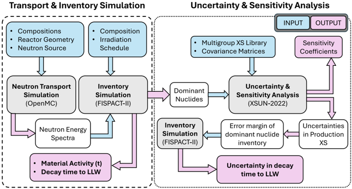
Summary of method combining transport and inventory calculation to investigate material activity with independent uncertainty analysis on relevant nuclear data.
El calculo de transmutacion es en si mismo un problema de modelado multiescala: hay que combinar calculos de transporte neutronico (que da el flujo de neutrones en cada zona del reactor) con calculos de inventario (que integra las reacciones nucleares en el tiempo para obtener la evolucion de composicion). Esta figura resume ese flujo de trabajo y destaca la necesidad de analisis de incertidumbre sobre los datos nucleares, ya que los errores en secciones eficaces se propagan a la composicion predicha tras anos de irradiacion.

Top: A section of phase diagram with Re, Os cluster concentration from experimental data for neutron irradiated W and ion irradiated W-Re-Os. Bottom: First principles based Monte Carlo simulations in a bcc 30x30x30 supercell with voids decorated by Re and Os in W with 2at% Re and 0.2at% Os at 1173K.
Esta figura conecta la prediccion computacional con datos experimentales de irradiacion de neutrones. La parte superior muestra que las concentraciones de Re y Os en precipitados irradiados se acercan a la frontera de estabilidad de fase en el diagrama W-Re-Os, lo que explica la formacion de precipitados de phase sigma/chi observada experimentalmente. La parte inferior muestra que simulaciones MC de primeros principios en superceldas con vacios reproducen la tendencia de Re y Os a segregarse en la superficie de los huecos (vacios), que actuan como trampas preferenciales.
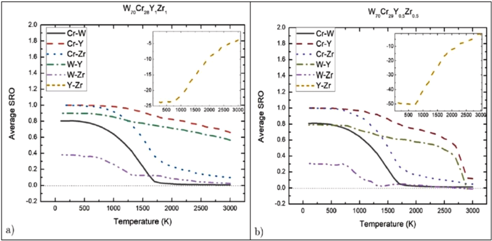
Short-range order evolution in W-Cr-Y-Zr SMART materials as function of alloy compositions, showing the phase decomposition between W and Cr whereas the SRO between Y and Zr is strongly negative.
Los materiales SMART (Self-passivating Metal Alloy Refractory for Tokamaks) de tipo W-Cr-Y-Zr se disenan para que, bajo condiciones de accidente, los elementos de Cr y Y formen una capa oxida protectora que evite la liberacion de polvo de W radiactivo. Esta figura muestra que las simulaciones MC predicen descomposicion de fases entre W y Cr (separacion de dominios ricos en cada elemento), mientras que el orden de corto alcance entre Y y Zr es fuertemente negativo (Y y Zr tienden a estar juntos en entornos locales). Esto tiene implicaciones directas para la cinetica de oxidacion y la estabilidad de la capa pasivante.
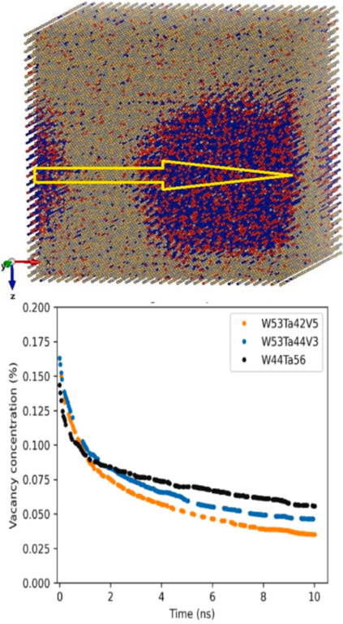
Top: Modelling of co-segregation of Cr and V from W and Ta in high-entropy alloys W38Ta36Cr15V11. Bottom: Reduction of void density from binary W-Ta to W-Ta-V alloys obtained from overlapping cascade MD simulations using machine-learning potentials.
Esta figura presenta dos resultados de modelado de HEA de W. La parte superior muestra que en el HEA W38Ta36Cr15V11, las simulaciones predicen segregacion de Cr y V formando precipitados distintos de la matriz W-Ta. Esto cambia localmente la quimica y puede afectar la movilidad de defectos. La parte inferior es el resultado mas directamente util para diseno: anadir V al W-Ta reduce la densidad de huecos formados en cascadas solapadas, lo que indica que el V suprime la formacion de vacios bajo irradiacion, una propiedad muy deseable para la primera pared.
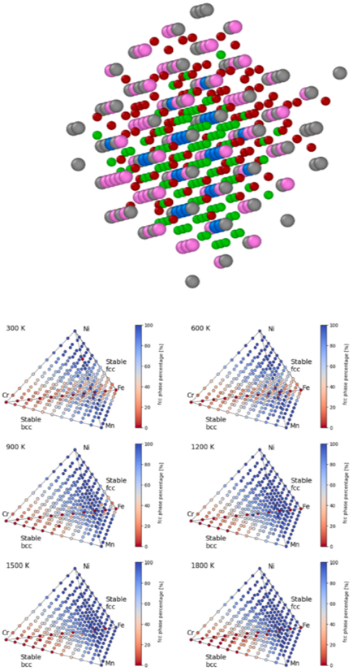
Top: Formation of Cr clustering predicted from modelling of Fe-alloys with nominal 3at.%Cr containing C, N impurities interacting with vacancies. Bottom: Temperature and composition maps showing fcc and bcc phases of Fe-Cr-Ni-Mn high entropy alloys from Monte-Carlo simulations using cluster expansion Hamiltonian.
Para los aceros ferriticos/martensiticos (FM), esta figura muestra dos fenomenos: primero, que el Cr forma clusters en presencia de impurezas C y N que interactuan con vacantes, lo cual es relevante para el endurecimiento por irradiacion; segundo, que en HEA de Fe-Cr-Ni-Mn, las simulaciones MC reproducen la coexistencia de fases fcc y bcc en funcion de temperatura y composicion, lo que es crucial para predecir la estabilidad de fase bajo las condiciones termicas del reactor.
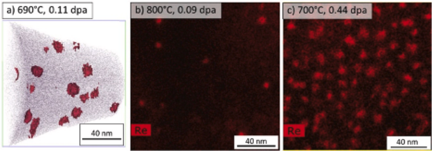
Re-enriched matrix precipitates in pure W irradiated in a mixed spectrum reactor at 590-700°C. The measured and calculated transmutant Re content is far below the 25% Re equilibrium phase stability limit for W-Re at these temperatures.
Una observacion experimental clave que el modelado debe explicar: en W irradiado en reactor a 590-700°C, se forman precipitados ricos en Re aunque la concentracion total de Re transmutado esta muy por debajo del limite de estabilidad de fase de equilibrio (~25% Re). Esto indica que los precipitados se forman por un mecanismo fuera del equilibrio relacionado con los defectos de irradiacion (vacios y SIAs actuan como nucleos), no simplemente por saturacion de la solucion solida. El modelado reproduce esta tendencia usando MC de primeros principios con vacios.
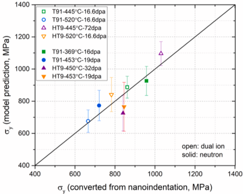
Comparison of predicted and measured hardening of HT9 and T91 ferritic/martensitic steels following fast reactor or dual ion irradiation.
Esta figura valida los modelos de endurecimiento por irradiacion en aceros FM comparando predicciones con datos experimentales de reactores de neutrones rapidos e irradiacion dual de iones. El acuerdo entre prediccion y medicion para HT9 y T91 respalda el uso de los modelos para predecir el comportamiento bajo condiciones de fusion, donde los datos experimentales directos son escasos. La validacion cruzada entre irradiacion con neutrones e iones es especialmente importante, ya que la irradiacion ionica es la principal herramienta de ensayo antes de que existan reactores de fusion operativos.
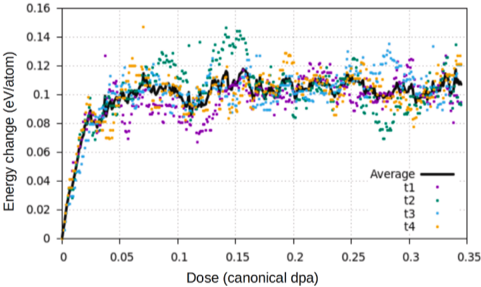
DFT-CRA trajectories of microstructural evolution in bcc Fe. The evolution of the total energy for four trajectories and their average is shown.
El metodo Cascade Residual Analysis (CRA) extrae el estado final de una cascada de colision desde calculos DFT mediante tecnicas de busqueda de minimos en la superficie de energia potencial. Esta figura muestra cuatro trayectorias de evolucion de la energia total durante una cascada, convergiendo cada una hacia configuraciones de defecto distintas. El promedio de trayectorias da una prediccion estadistica del estado danado. Este enfoque es mas costoso que MD clasico pero mas preciso en la descripcion de los defectos individuales.
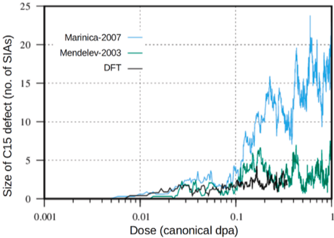
The largest C15-type structures, dynamically formed under CRA conditions, as a function of irradiation dose predicted by different methodologies.
Los defectos de tipo C15 (clusters de intersticiales con simetria de Laves) son energeticamente estables en Fe y se predicen como configuraciones importantes en la microestructura irradiada. Esta figura muestra que la fraccion de SIAs en la mayor estructura C15 crece con la dosis, y que distintas metodologias (CRA de DFT, potenciales empiricos) dan predicciones cualitativamente consistentes aunque con diferencias cuantitativas. La existencia de defectos C15 afecta la cinetica de recocido y la evolucion del dano a largo plazo.
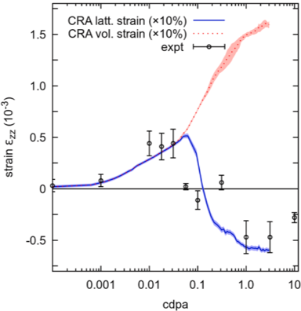
Variation of lattice strain and volume strain of an ion irradiated tungsten sample. The scatter plot shows X-ray Laue diffraction measurements of the lattice strain along the irradiation direction. Lattice strain and volumetric strain derived from CRA simulations are shown in solid and dashed curves.
Una validacion experimental directa del metodo CRA en W irradiado con iones: la deformacion de red medida por difraccion Laue de rayos X (dispersora) se compara con la predicha por CRA (lineas). El acuerdo es razonable, y la diferencia entre deformacion de red y de volumen (linea solida vs discontinua) refleja la anisotropia de los defectos formados. Esta validacion es importante porque la deformacion de red es una medida macroscopica accesible experimentalmente que integra toda la microestructura de defectos.
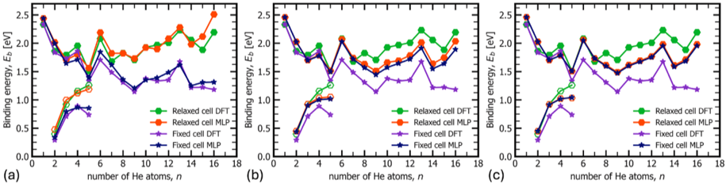
Comparison of binding energies calculated with the MLP using 4x4x4, 8x8x8, and 12x12x12 supercells. DFT data is calculated using a 4x4x4 supercell. Binding energies of He with He-vacancy bubbles and He clusters.
El helio en W es uno de los problemas mas dificiles en fusion: el He implantado desde el plasma forma burbujas que degradan las propiedades mecanicas de la superficie (formacion de fuzz, ampollas). Para modelar eso se necesitan energias de enlace He-burbuja precisas. Esta figura muestra que los MLPs reproducen las energias de enlace DFT con buena precision en superceldas pequenas (4x4x4), y que la convergencia con el tamano de supercell es adecuada. Esto valida el uso de MLPs para simulaciones mas grandes de nucleacion y crecimiento de burbujas de He.
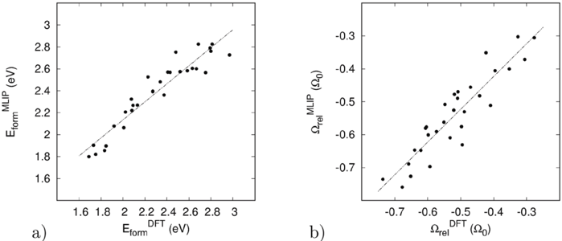
Comparison of (a) formation energies and (b) relaxation volumes of vacancies in the equiatomic random Ta-Ti-V-W high-entropy alloy computed using DFT and MLP.
En un HEA, cada sitio de vacante tiene un entorno quimico distinto, por lo que la energia de formacion de vacante no es un numero unico sino una distribucion. Esta figura compara DFT y MLP para esa distribucion en el HEA equiatómico Ta-Ti-V-W: el MLP reproduce fielmente tanto la media como la dispersion de energias de formacion y volumenes de relajacion de vacantes. Esto es fundamental para predecir la evolucion del dano bajo irradiacion en estos materiales avanzados.
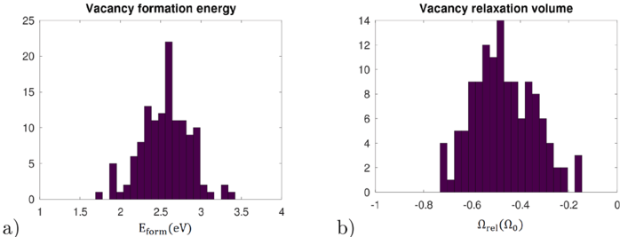
Distribution of (a) formation energies and (b) relaxation volumes for vacancies computed using MLP for the structure of disordered equiatomic Ta-Ti-V-W alloy with 128 atomic sites.
Complementa la figura anterior con la distribucion completa de energias de vacante en 128 sitios del HEA desordenado calculada con MLP. La amplitud de la distribucion refleja la heterogeneidad quimica del HEA: algunos sitios tienen vecinos mas favorables para la vacante (baja energia de formacion) y otros menos. Esa distribucion de energias de trampa afecta directamente la movilidad de vacantes bajo irradiacion y la cinetica de formacion de clusters de defectos.
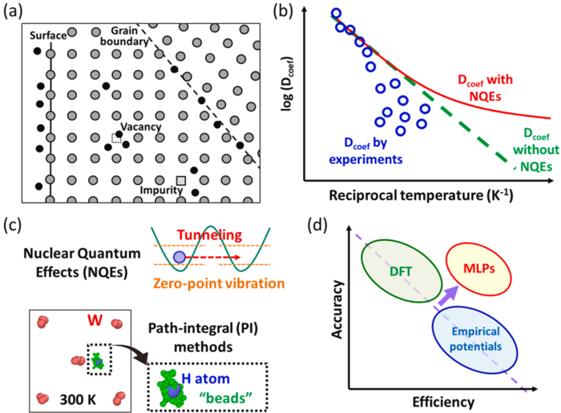
(a) Hydrogen interacting with lattice defects. (b) Arrhenius plot of hydrogen diffusion coefficient. Red/green lines show diffusion with and without NQEs respectively. (c) NQEs and their description by PI methods. (d) Improvements in accuracy-efficiency thanks to MLPs.
El hidrogeno (y sus isotopos deuterio y tritio) es el combustible de fusion y uno de los principales problemas de retencion en la primera pared. Esta figura resume el estado del arte en su modelado: el panel a) muestra los mecanismos de atrapamiento en defectos, el panel b) muestra que a baja temperatura los datos experimentales de difusion se desvian de la ley de Arrhenius clasica porque el H tunel cuanticamente (NQEs), el panel c) explica como los metodos de path-integral (PI) capturan esos efectos, y el panel d) muestra que los MLPs hacen practico calcular NQEs en sistemas grandes que antes estaban fuera de alcance.
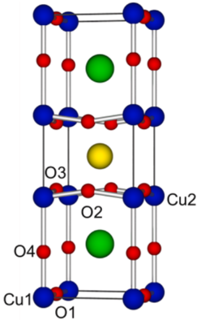
Graphical representation of the REBa2Cu3O7 unit cell, where red spheres represent oxygen ions and blue, green and yellow spheres represent copper, barium and rare earth cations respectively.
Los imanes de campo alto en los tokamaks modernos (como los de ITER y los prototipos de alta campo como ARC/SPARC/STEP) usan superconductores de alta temperatura basados en REBa2Cu3O7 (REBCO). Esta figura muestra la celda unitaria compleja de este material, con 13 atomos por celda de 7 especies distintas. La complejidad estructural hace que simular el dano por irradiacion (necesario para estimar la degradacion de los imanes durante la vida util del reactor) sea un desafio computacional significativo.
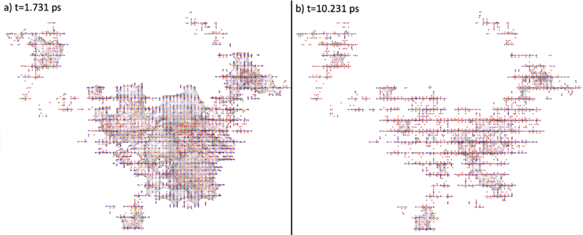
Two images of the cascade progression in the x-z plane of a 20 keV cascade with pka launched in the x direction at peak damage and final state. Vacancies are cubes, interstitial are spheres, antisites are spherocylinders.
Resultado de una simulacion MD de cascada en REBCO con un atomo primario de knock-on (PKA) de 20 keV. La imagen de pico de dano muestra la zona caliente con muchos defectos; la imagen de estado final muestra la recombinacion y los defectos persistentes. La presencia de antisitios (un atomo en el sitio de otro elemento) es una caracteristica especifica de materiales multicomponentes que no aparece en metales puros, y puede degradar las propiedades superconductoras del REBCO.
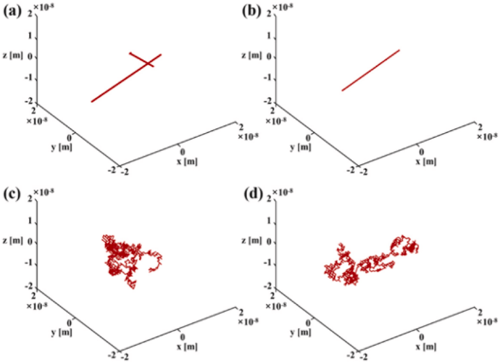
Trajectories of migrating SIA defects and He-SIA (n=1,2) defects at 300 K. (a) SIA1; (b) SIA2; (c) He-SIA1; and (d) He-SIA2.
Esta figura ilustra visualmente como migran los defectos de interatomo propio (SIA) en W a 300 K, y como cambia esa migracion cuando el SIA esta asociado con un atomo de He. Un SIA puro tiende a migrar en una dimension (a lo largo de una direccion cristalografica); cuando lleva un atomo de He, la trayectoria cambia hacia patrones mas tridimensionales. Este cambio de dimensionalidad de la migracion tiene consecuencias directas para la cinetica de acumulacion de dano: si los SIAs migran en 3D en lugar de 1D, alcanzan sumideros mas facilmente y el dano se aniquila mas rapido.
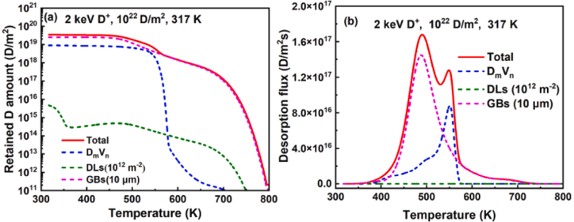
(a) Simulated retention as a function of annealing temperature after 2 keV D ion implantation with a fluence of 10^22 D/m^2 at 317 K. (b) Simulated total and partial TDS spectra at heating rate 0.5 K/s.
La retencion de tritio en la primera pared es un problema de seguridad critico (inventario de tritio radiactivo) y de economia de combustible en fusion. Esta figura muestra predicciones de retencion de D (sustituto de T) en W como funcion de temperatura de recocido, y los espectros de desorcion termica programada (TDS) correspondientes. Cada pico en el espectro TDS corresponde a D liberado desde un tipo de trampa especifico (vacantes, dislocaciones, bordes de grano). La coincidencia con datos experimentales publicados valida el modelo cinetico de difusion-trampa.
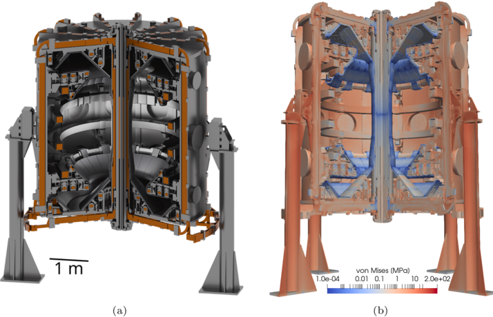
(a) Analysis-ready CAD model of the MAST-U tokamak device. The associated finite element mesh involves 127 million elements. (b) The tokamak is loaded with gravitational body forces, producing stresses illustrated using the von Mises invariant of the stress field.
Esta figura representa el extremo superior de escala del review: una simulacion FEM de cuerpo completo del tokamak MAST-U con 127 millones de elementos. El mapa de esfuerzos von Mises muestra donde la estructura soporta las mayores cargas gravitacionales, lo que informa el diseno estructural del tokamak. Este tipo de simulacion a escala de componente es el destino final de la cadena de modelado multiescala: los parametros de material derivados de MD/DFT alimentan el modelo FEM y los resultados guian decisiones de diseno de ingenieria.
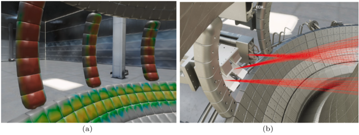
A demonstration of the capabilities of V-KSTAR: a) 3D distribution of heat fluxes on plasma facing components due to fast ion losses. b) V-KSTAR 3D tracings of radio frequency waves injected for plasma heating and current drive in KSTAR.
V-KSTAR es una plataforma de simulacion integrada del tokamak KSTAR de Corea. Esta figura muestra dos de sus capacidades: el calculo 3D de flujos de calor sobre los componentes que enfrentan el plasma (relevante para predecir el dano termico y la erosion), y el trazado de ondas de radiofrecuencia inyectadas para calentamiento y control de corriente. Ambas son entradas criticas para los modelos de dano de material: el flujo de calor determina la temperatura de la pared, y la temperatura afecta todos los procesos cineticos de defectos.
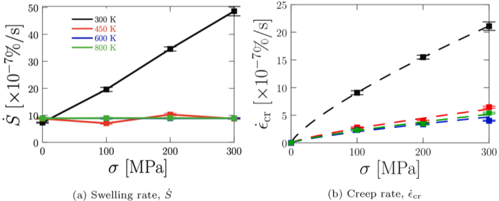
Changes in dimensional stability as a function of temperature for Fe under DEMO helium-cooled pebble bed (HCPB) fusion blanket conditions. (a) Swelling rate. (b) Creep rate.
Para los materiales de la manta reproductora (blanket), el hinchamiento y la fluencia por irradiacion son modos de fallo criticos: pueden cambiar las dimensiones de los componentes y comprometer la hermeticidad o el circuito de refrigeracion. Esta figura muestra las predicciones de tasa de hinchamiento y tasa de fluencia en Fe puro bajo las condiciones especificas de la manta HCPB del diseno DEMO europeo. Ambas tasas tienen dependencia con la temperatura y la dosis, y el modelo predice un maximo de hinchamiento a temperatura intermedia que coincide con el regimen de mayor movilidad de defectos.
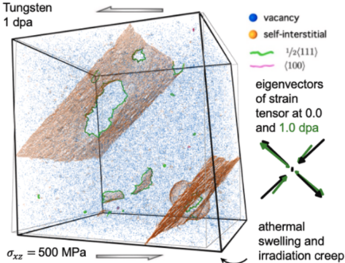
Molecular dynamics simulation of low temperature irradiation creep in tungsten. In the absence of thermally activated diffusion, vacancies remain immobile and isolated, while self-interstitial atom defects coalesce irrespectively of thermal activation, driven by elastic interactions. The irreversible deformation remains closely aligned with externally applied stress.
La ultima figura del review cierra con un resultado contraintuitivo: a baja temperatura, donde la difusion termica de vacantes es despreciable, los SIAs (intersticiales) aun pueden formar clusters y generar fluencia irreversible impulsada por interacciones elasticas con el esfuerzo externo aplicado. Esto significa que incluso a baja temperatura, el W bajo irradiacion puede deformarse de forma permanente y anisotropica siguiendo la direccion del esfuerzo externo. Este mecanismo no aparece en modelos de fluencia clasicos y requiere simulacion MD para ser capturado correctamente.
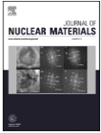
Sin caption extraido.
Elemento editorial de la primera pagina del articulo (logo de revista o marca de pagina). No corresponde a una figura cientifica.
Sin caption extraido.
Segundo elemento editorial de la primera pagina. No contiene datos de resultados.
Sin caption extraido.
Tercer elemento de pagina detectado por el extractor en la primera pagina del PDF.
Sin caption extraido.
Cuarto elemento de pagina. Los cuatro primeros detectados corresponden al encabezado editorial de la primera pagina del review.
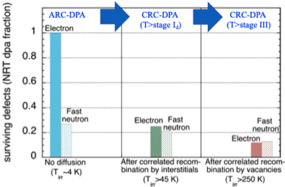
Sin caption extraido.
Elemento grafico detectado en la pagina 9 sin caption explicito en el PDF. Probablemente un esquema de apoyo o elemento de formato.
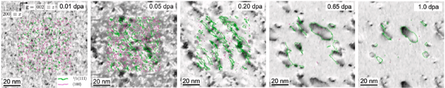
Sin caption extraido.
Elemento de pagina entre las figuras 12 y 14 del paper. Posiblemente un esquema de transicion de seccion o elemento de estilo de la revista.
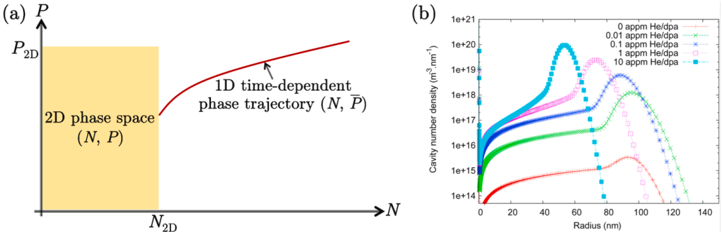
Sin caption extraido.
Elemento detectado en la pagina 14 sin identificacion de figura. No aporta datos analiticos.
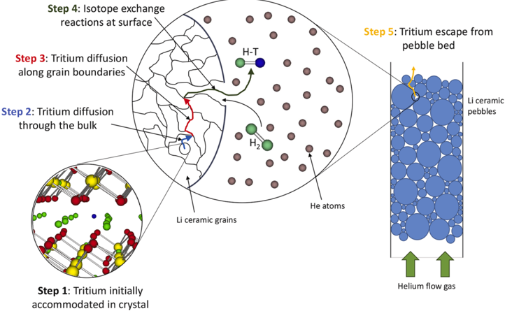
Sin caption extraido.
Elemento grafico de pagina 19 sin caption. No corresponde a una figura numerada del review.
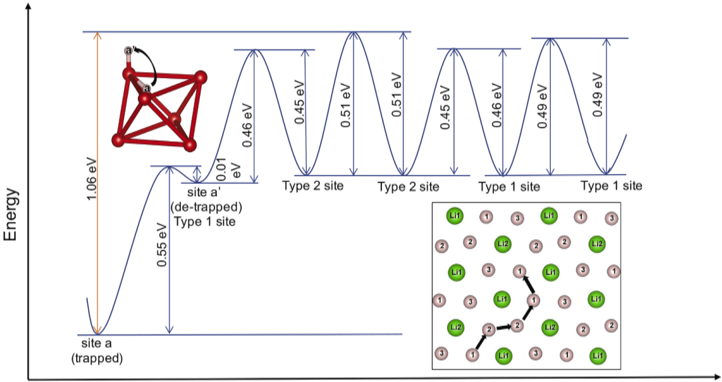
Sin caption extraido.
Segundo elemento de la pagina 19 sin caption extraido. Conservado para completar el set de imagenes extraidas.
Brechas Identificadas Por El Review
Acoplamiento multiescala: La cadena DFT → MLP → MD → FEM existe pero no esta automatizada ni sistematicamente validada de extremo a extremo para condiciones de fusion. Cada eslabón introduce incertidumbres que se propagan hacia arriba.
Datos nucleares: Las incertidumbres en secciones eficaces de transmutacion se propagan a la composicion predicha del material a largo plazo, con consecuencias para las propiedades mecanicas predichas.
Materiales HEA y SMART: Los potenciales interatomicos para aleaciones multicomponentes de W son escasos y de cobertura quimica limitada. Los MLPs son la via mas prometedora pero requieren grandes bases de datos DFT de entrenamiento.
Efectos cuanticos en H/T: Los NQEs son criticos para la retencion de tritio pero computacionalmente costosos. El uso de MLPs con path-integral MD es el camino mas inmediato para hacerlo practico.
Simulaciones de componente completo: Las simulaciones FEM a escala de tokamak existen pero aun usan propiedades de material simplificadas (no las derivadas de MD bajo irradiacion). Cerrar ese ciclo es el reto de ingenieria pendiente.
Resumen Final
Este review es un mapa completo del estado del arte en modelado de materiales de fusion a principios de los anos 2020. La vision de conjunto es que las herramientas computacionales han madurado enormemente: los MLPs hacen accesible la precision DFT en sistemas grandes, la MD simula cascadas y difusion con quimica realista, y los modelos FEM a escala de tokamak ya existen. Lo que falta es el acoplamiento sistematico y validado de toda la cadena, junto con mas datos experimentales de irradiacion en condiciones de fusion para validar los modelos en regimenes aun inaccesibles. El modelado no es solo una herramienta de investigacion: es una necesidad practica para predecir la vida util de los materiales en reactores que no pueden experimentarse durante anos antes de construirse.
Archivo HTML generado desde el PDF local y las figuras ya extraidas en pappers/ilove-LucaReali.2026_figures. El review contiene 30 figuras numeradas (Figs. 1-30, con Fig. 9, 13, 16, 23, 24 no extraidas con caption por el extractor) y 9 elementos de pagina sin caption.